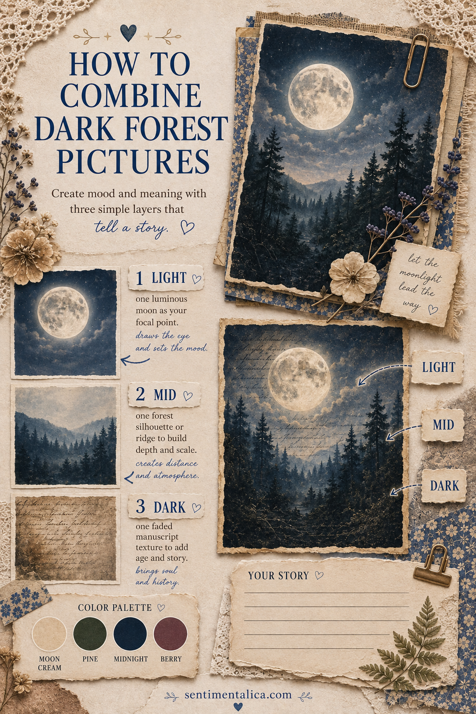
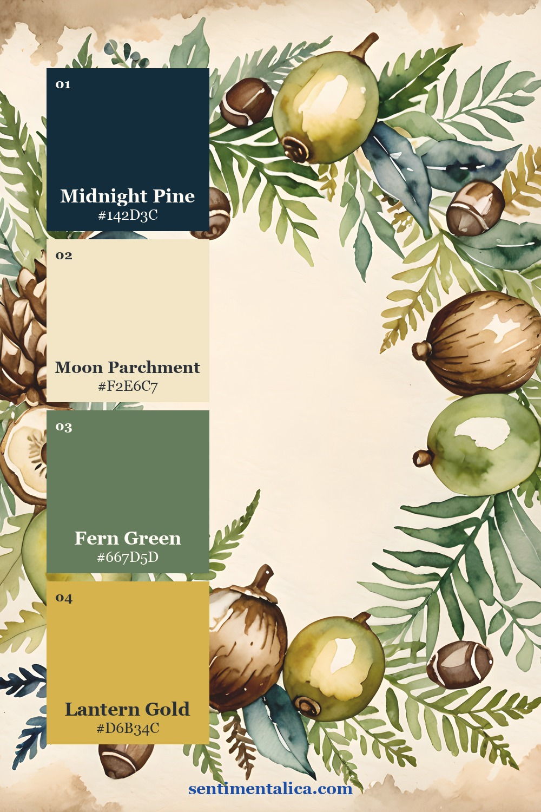
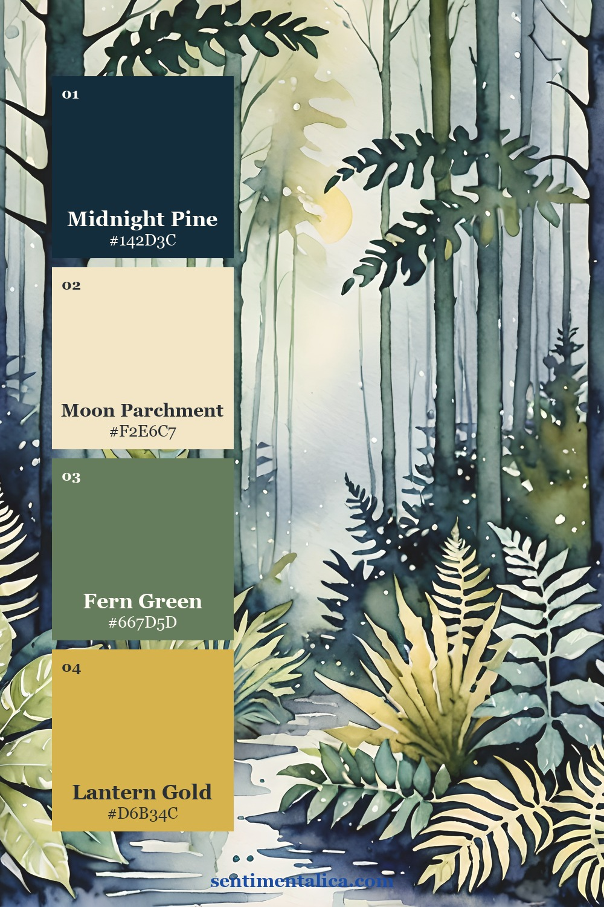
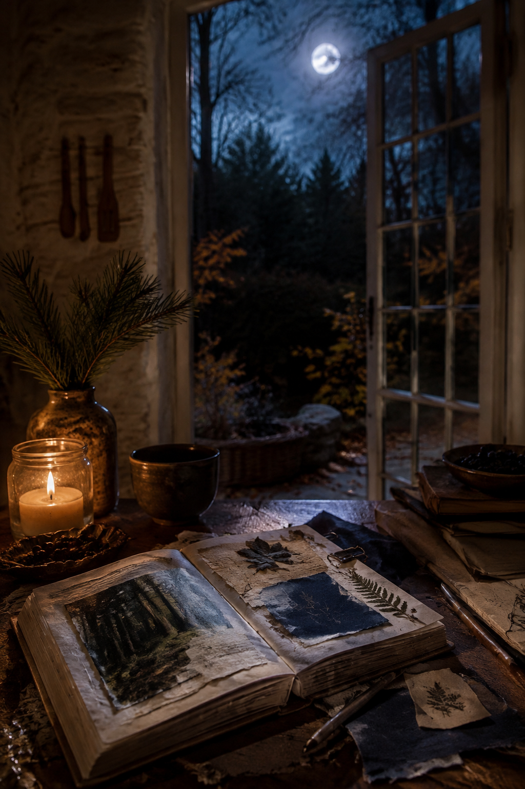

A dark forest page needs more than dark paper. Depth appears when the layers have clearly different values: one luminous area, one middle-distance shape and one deep shadow. Moon Forest makes this especially effective because moonlight naturally gives the viewer a place to look.

Separate the three values
Make the moon or pale sky your light. Use a tree line, ridge or blue-grey wash for the middle. Reserve the deepest navy, charcoal or pine for the dark foreground. If two adjacent images have the same value, add a narrow parchment border between them.
Leave one pale writing area away from the moon. This keeps the page useful and prevents the glow from becoming the only readable element.
Three palettes beyond black and orange

The first palette is quiet and natural. Use moon cream generously, pine for structure and midnight only around the outer edges. A restrained berry accent adds autumn without turning the spread into a conventional Halloween page.

The second palette feels colder and more mysterious. Warm it with aged book paper or a small brass detail rather than orange.

Choose the third palette for a richer storybook effect. Let the lightest color touch every major cluster so the eye can travel through the darkness.
Combine the images from distant to near
Put the palest, softest image at the back. Overlap it with a middle-value forest piece, keeping the horizon visible. Add the darkest silhouette last and nearest the bottom or side edge. A strip of handwriting or faded manuscript can pass behind the middle layer to suggest time and memory.
Do not outline every piece with dark ink. Edge only the pale layer, or only the focal image. Too many outlines flatten the scene into separate cutouts.

When the page is finished, photograph it in black and white. If the moon, middle forest and foreground remain distinct, the depth is working. If they merge, lighten one border before adding anything else.